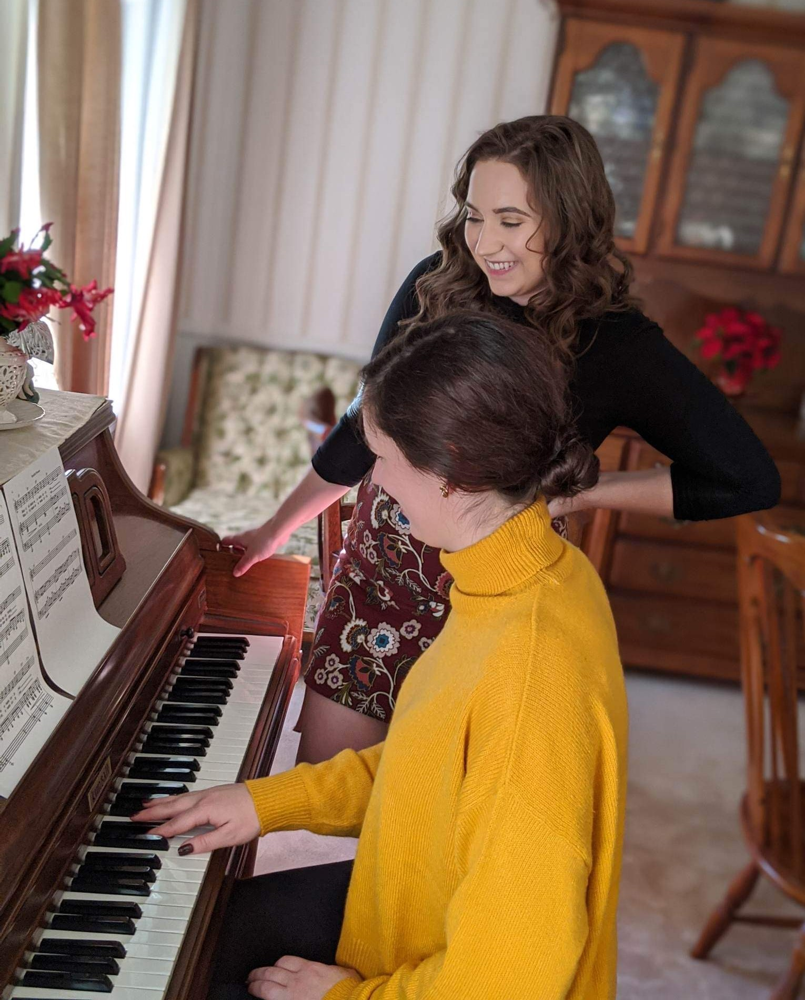

Music is one of those things that has been a part of my life from a young age. As a child, I remember my dad's efforts to expose my siblings and I to as much music as possible. From classical to 90s grunge bands, we always had music playing, and he always made a point to talk about the artist, what he liked about the genre or lyrics or just why it was important.
At 8 years old, I started piano lessons. My grandma paid for them because she deeply regretted that she had never learned how to play. And while I didn't always love it at the time - who wants to practice piano when you've just been in school all day?! - I am so glad for it now. Not just as a neat party trick or a relaxing hobby, but because I truly believe I would be an entirely different person without it.

In addition to piano, I sang in school choirs. I participated in the school musicals. I played the trombone in marching band and jazz band and concert ensemble. I was in a steel drum band and a taiko drum group. And all of it would have been impossible without arts education funding. I was so incredibly fortunate to grow up in a community that valued music education and provided extracurriculars to shape those abilities. Because the science shows what an important role it plays on development and critical thinking.
Unfortunately, I don't find the time to play music as much as I once did. I may sit down at the piano once a month as opposed to everyday. But the skills I've gained from it are something I will always have. Like a second language, I will always have the ability to read music. And I believe everyone should be given that same opportunity that I had, regardless of their personal backgrounds.